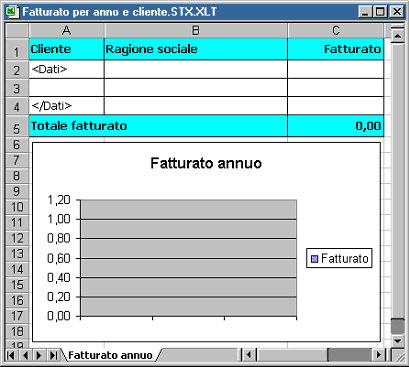
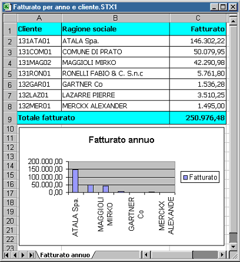

L'esecuzione della statistica può avvenire in diversi modi, nel dettaglio:
Se presente il report in stampa oppure in anteprima di stampa.
In griglia (pulsante Esegui).
Direttamente negli appunti (pulsante Copia in appunti).
In Word, mediante l'utilizzo di un modello di stampa unione che è possibile creare in automatico selezionando l'apposita voce di menù e poi modificare a proprio uso.
In Excel, mediante l'utilizzo di un modello che è possibile creare in automatico selezionando l'apposita voce di menù e poi modificare a proprio uso.

Eseguendo la statistica sul modello il risultato sarà il seguente:
